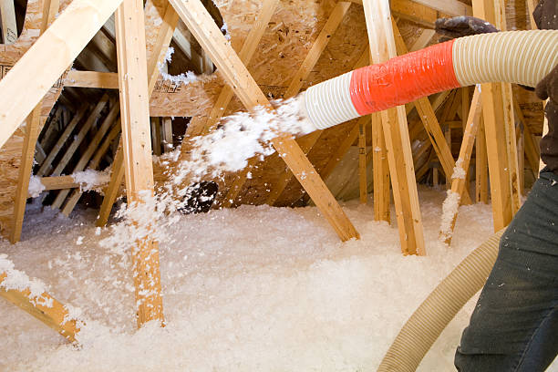

Chandler Arizona
info@healthproinsulationservices.xyz
Chandler Arizona
info@healthproinsulationservices.xyz

Enhance energy efficiency in Chandler Arizona with expert insulation services. Our certified team ensures reduced energy costs, improved comfort, and superior air quality.
Click Here To Call Us (877) 848-1711Looking for reliable insulation services in Chandler Arizona ? Health Pro Insulation Services offers top-quality insulation solutions for residential and commercial properties, ensuring maximum energy efficiency and comfort. As the leading insulation company in Chandler Arizona we specialize in spray foam, fiberglass, and cellulose insulation, tailored to meet your specific needs. Whether you’re upgrading your attic, walls, basement, or crawl space, our certified professionals are here to help you reduce energy bills and create a more comfortable environment.
At Health Pro Insulation Services, we understand the unique climate challenges in Chandler Arizona . That’s why we use advanced insulation materials that not only keep your property warm in the winter but also cool in the summer. Our insulation services significantly improve indoor air quality by minimizing drafts and sealing gaps that allow heat loss. With our eco-friendly and energy-saving solutions, you can expect a noticeable reduction in your heating and cooling costs.
Choosing Health Pro Insulation Services means choosing a team dedicated to quality, safety, and customer satisfaction. We offer free consultations and energy assessments to ensure that your home or business receives the best insulation solution possible. Don’t let outdated insulation cost you more money—contact us today for a no-obligation quote and discover why Chandler Arizona homeowners and businesses trust us for all their insulation needs. Improve your property’s energy performance and enjoy a more comfortable space with our professional insulation services.
Residential & commercial Insulation Services
Quality services at affordable prices
Immediate 24/ 7 emergency services

Upgrading your home’s insulation with Health Pro Insulation Services is one of the smartest investments you can make for your Chandler Arizona property. With rising energy costs and the need for comfort all year round, ensuring your home is properly insulated is crucial. Poor insulation leads to significant energy loss, making your heating and cooling systems work overtime. By upgrading your insulation, you can reduce energy bills by up to 30%, maintain consistent indoor temperatures, and enhance the overall comfort of your home.
Health Pro Insulation Services specializes in top-quality insulation solutions designed to meet the unique needs of Chandler Arizona homes. Whether you’re dealing with drafty rooms, uneven temperatures, or high energy bills, our expert team will assess your current insulation and recommend the best options to improve your home’s energy efficiency. We use advanced materials and techniques to ensure maximum thermal performance, reducing noise pollution and keeping your indoor environment cozy.
Beyond energy savings, upgrading your insulation with Health Pro Insulation Services also contributes to a healthier home. Proper insulation helps prevent mold growth, reduces allergens, and enhances indoor air quality, making it ideal for families concerned about their well-being. Plus, a well-insulated home increases your property’s value, providing a great return on investment.
Don’t let outdated insulation affect your comfort or wallet. Choose Health Pro Insulation Services, the trusted local experts in Chandler Arizona and start enjoying a more efficient and comfortable home today. Contact us now for a free consultation and experience the difference!
Residential & commercial Insulation Services
Quality services at affordable prices
Immediate 24/ 7 emergency services
If your attic insulation is old, damaged, or insufficient, our attic insulation removal and replacement services are the solutions you need. Our process begins with a thorough inspection to assess the condition of your current insulation and determine the best course of action. Our skilled team safely removes old insulation, ensuring a clean and healthy environment for your home. We then replace it with energy-efficient insulation materials tailored to fit your needs. Our commitment to quality ensures that you will not only improve your home’s energy efficiency but also enhance air quality and comfort. Trust us to handle your attic insulation replacement needs with the utmost professionalism.

Over time, insulation may degrade, settle, or get damaged, impacting your home's energy efficiency. Our insulation repair services ensure that your insulation remains effective and functional. We perform thorough inspections to identify the areas in need of repair and recommend the most suitable solutions. Our skilled technicians are trained to work with various insulation types, providing you with prompt and reliable service. Repairing your insulation not only improves energy efficiency but can also prevent larger issues down the line. Choose us for your insulation repair needs and enjoy a more comfortable and energy-efficient home.

When searching for insulation companies near you, finding a trusted partner can make all the difference. At Insulation Services, we are recognized as one of the leading insulation providers in Chandler Arizona . Our expertly trained staff and commitment to using high-quality materials ensure that your insulation project is in good hands. We offer a wide range of insulation services tailored to both residential and commercial properties, providing customized solutions for every need. Whether you need new insulation installed, repairs, or removals, we’ve got you covered. Trust our reputation for excellence and let us help you make your property more energy-efficient and comfortable.

Fiberglass insulation remains one of the most popular options for homeowners due to its effective thermal performance and affordability. Our fiberglass insulation installation services in Chandler Arizona are designed to provide you with a high-quality solution that meets your insulation needs. Our team has extensive experience in installing fiberglass insulation in attics, walls, and crawl spaces, ensuring that your home remains comfortable throughout the year. We prioritize proper installation techniques to maximize effectiveness and energy savings. Additionally, we value transparency in our pricing and process, giving you peace of mind that you’re getting the best service possible. Choose us for your fiberglass insulation installation and enjoy a more efficient and comfortable living space.

Discover how effective insulation can lower your energy costs . Schedule a consultation today!
Call Us Now (877) 848-1711
Spray foam insulation is an outstanding choice for many homeowners, offering superior insulation power and air sealing capabilities. Our spray foam insulation services for homes in Chandler Arizona are designed to create a seamless barrier that protects against air leaks, reducing heating and cooling costs. Our team is skilled in applying spray foam insulation in various areas, ensuring maximum coverage and efficiency. With a quick turnaround time, you can enjoy the benefits of improved comfort and lower energy expenditure. Choose us for our dedication to quality and customer satisfaction.
alooma23id

As winter approaches, it's essential to ensure your home is properly insulated to withstand the cold temperatures effectively. Our insulation for winterizing homes focuses on preparing your property to retain heat and maximize energy efficiency during the colder months. We evaluate your current insulation situation and help determine the right materials to keep your home warm and comfortable. Our team specializes in installing various types of insulation such as spray foam, fiberglass, and cellulose, offering customized solutions to fit your home’s layout and needs. By choosing us, you can rest assured your home will stay cozy, and you’ll save on heating costs this winter.

Transform your basement into a cozy space with our insulation solutions in Chandler Arizona . Reach out today!
Call Us Now (877) 848-1711Years Experience
Expert Technicians
Satisfied Clients
Compleate Projects
At Health Pro Insulation Services, we are committed to delivering exceptional insulation solutions for both residential and commercial properties throughout Chandler Arizona . Our team of experienced professionals is dedicated to enhancing your property's energy efficiency and overall comfort. We bring extensive expertise in various insulation types, including spray foam, fiberglass, and cellulose, tailored specifically to meet the needs of Chandler Arizona homes and businesses.
Our insulation services are designed to significantly reduce your energy bills by improving thermal performance and minimizing heat loss. By effectively sealing gaps and insulating key areas, we help create a more energy-efficient environment, ultimately saving you money and increasing comfort year-round.
We understand that every property has unique requirements, which is why we offer personalized consultations and thorough assessments to determine the best insulation solutions for your specific situation. Our goal is to address any challenges your property may face and deliver tailored solutions that provide lasting results.
Our commitment to quality and customer satisfaction sets us apart. From the initial consultation to the final installation, our team is dedicated to exceeding your expectations. We use only the highest-quality materials and advanced techniques to ensure a superior finish and long-term performance.
Choose Health Pro Insulation Services in Chandler Arizona for reliable, efficient, and expert insulation solutions. Contact us today to schedule your free consultation and discover how we can help you achieve a more comfortable, energy-efficient space.
Finding the right insulation contractor near you is essential for maintaining your home’s energy efficiency and comfort. Our team of expertly trained insulation contractors in Chandler Arizona is dedicated to providing top-notch insulation services that meet the unique needs of your property. We utilize advanced techniques and high-quality materials to ensure your home or business remains insulated against the elements. Our commitment to customer satisfaction, punctuality, and excellence has made us a leader in the insulation industry in Chandler Arizona . Choose us for our competitive pricing and a no-obligation consultation that helps you determine the best insulation for your property.
Proper attic insulation is crucial for maintaining optimal temperature control in your home while reducing energy costs. Our attic insulation services focus on energy efficiency, comfort, and improved air quality. We offer multiple insulation options, including fiberglass, cellulose, and spray foam, tailored to fit your specific needs. Our experienced technicians carefully assess your attic space to determine the best insulation solution. Using premium materials and sustainable practices, we not only enhance your home's energy efficiency but also aid in soundproofing and moisture control. What sets us apart is our commitment to customer satisfaction and our proficiency in eco-friendly techniques. When you choose our attic insulation services, you're not just getting a service, but a lasting solution for your home.
When it comes to energy-efficient insulation solutions, spray foam insulation is at the forefront. At Insulation Services we offer premium spray foam insulation services designed to create an airtight barrier in your home. This innovative product expands upon application, filling gaps and cracks, which conventional insulation often misses. Not only does spray foam insulation improve energy efficiency, leading to lower utility bills, but it also enhances soundproofing and moisture resistance. Our trained professionals use the highest quality materials and the latest techniques to deliver flawless application, ensuring you get the full benefits of this modern insulation solution. Whether you are retrofitting an existing home or looking to insulate a new construction project, our dedicated team guarantees exceptional results with minimal disruption to your daily life. Choose us for your spray foam insulation needs, and experience the comfort and efficiency that comes with it.
Insulating your home is pivotal in enhancing energy efficiency and comfort. Our residential insulation installation services in Chandler Arizona cover every aspect of your home—be it walls, attics, or basements. Our skilled technicians will conduct an in-depth assessment of your property and recommend the best insulation type tailored to your specific needs. We strive to make your home a sanctuary of comfort. With a focus on affordability and quality, our services ensure that you experience immediate savings on your heating and cooling bills. Choose Insulation Services, as we are committed to making your home energy efficient while enhancing its overall value.
For businesses finding reliable commercial insulation contractors is vital for maintaining a comfortable and energy-efficient environment. Our team specializes in providing comprehensive insulation solutions tailored to commercial properties of all sizes. We understand the complexities of commercial buildings, including HVAC requirements and building codes, which allows us to offer insulation options that enhance performance and long-term savings. We work with a variety of commercial materials, ensuring that your business benefits from reduced energy costs, improved sound control, and overall comfort for employees and customers. When you partner with us, you’re working with dedicated professionals who are committed to delivering exceptional service and results that align with your business goals.
Your home deserves the best insulation services available, and that’s exactly what we offer at Insulation Services. Our home insulation services encompass everything from initial consultations to installation and beyond. We prioritize energy efficiency, ensuring your home remains comfortable throughout all seasons. Our team protects your property from the extreme temperatures outside while minimizing your carbon footprint. With years of experience in residential insulation, we are known for our robust customer support and quality workmanship. Choose us today to start saving on energy costs.
Many homeowners overlook the crawl space when considering insulation, yet it plays a crucial role in your home’s overall energy efficiency. Our crawl space insulation services effectively seal and insulate this often-neglected area, preventing moisture intrusion and heat loss. By utilizing high-quality insulation materials and effective installation techniques, we can turn your crawl space into a well-sealed zone that protects your home’s foundation. Don’t underestimate the value of a properly insulated crawl space—choose us for our thorough approach and premium materials.
Wall insulation installation is a vital element in maintaining an energy-efficient home. Our expert team specializes in installing insulation in all types of walls, ensuring that your home remains comfortable throughout the year. We offer various insulation materials, including fiberglass batts, cellulose, and spray foam, each tailored to your specific heating and cooling needs. With our extensive knowledge and experience, we guarantee a flawless installation process that adheres to all safety and quality standards. Choose us for our dedication to sustainability and excellence.
Blown-in insulation is an effective method for insulating attics and walls, providing excellent coverage and energy efficiency. Our blown-in insulation services utilize advanced materials that are both eco-friendly and effective at preventing energy loss. This type of insulation is ideal for adding insulation to existing walls or areas where traditional batts don’t fit. It can be installed quickly and efficiently, minimizing disruption to your home. Our expert team will assess your insulation needs and provide you with a detailed plan to enhance your home’s energy performance. By opting for our blown-in insulation, you are choosing a cost-effective solution that will lead to significant savings in your energy bills and improve your home's comfort.
We believe that quality insulation should be accessible to everyone. Our affordable insulation services offer competitive pricing without compromising quality. We provide a range of insulation options tailored to fit any budget, ensuring that your home or business is comfortable all year round while still being energy efficient. Our team works closely with you to find the best solutions that meet your financial and performance needs. With our commitment to transparency, you will receive comprehensive quotes with no hidden fees. Trust us to provide exceptional insulation at a price that won’t break the bank, making your home more energy-efficient and comfortable.
Finding the best insulation contractors in Chandler Arizona is essential for ensuring high-quality service and satisfactory results. At Insulation Services, we have built a reputation for excellence and reliability in the insulation industry. Our team is composed of highly skilled professionals who are dedicated to delivering exceptional workmanship on every project. We stay updated with the latest industry trends, materials, and technologies to provide you with the best solutions. Customer satisfaction is our top priority, and we take pride in our transparent communication and respect for your home or business. Our numerous satisfied clients are a testament to the quality and reliability of our services. Choose us, and see why we are hailed as the best insulation contractors in Chandler Arizona .
If noise is a concern in your home or business, consider our soundproof insulation services . Our specialized team utilizes advanced materials and techniques to reduce sound transmission between rooms and from outside noise. We offer various soundproofing options tailored to your specific needs, enhancing both comfort and privacy. Our installations are performed with care to ensure optimum performance and durability. Additionally, soundproof insulation contributes to overall air quality by minimizing outside noise intrusion. Choose us for your soundproof insulation needs, and enjoy the peace and quiet you deserve in your home or workplace.
Sometimes, old or damaged insulation can lead to more problems than benefits. Our insulation removal services are designed for homeowners looking to replace their current insulation with an improved solution. We carefully remove existing insulation, ensuring a clean and safe removal process that adheres to all safety regulations. After removal, our expert team can discuss and implement the best insulation options for your property to ensure improved energy efficiency and comfort. Trust us for our reliable services and thorough approach to insulation removal.
Insulating your roof is vital for maintaining comfortable temperatures and energy efficiency within your home. Our roof insulation installation services specialize in providing long-lasting roofs that enhance your building's performance. We understand that roofs come in various types, and our experienced team is trained in various insulation methods suitable for your roof structure. With the right roof insulation, you can prevent heat loss, reduce energy costs, and prolong the life of your roof. We use high-quality materials and adhere to industry best practices to ensure effective installation. Choose us for your roof insulation installation and enjoy a more efficient and comfortable home.
Reducing energy costs while keeping your home comfortable is easier than ever with energy-efficient insulation solutions from Insulation Services. Located we specialize in providing top-notch insulation materials and installation services designed to improve energy performance in residential and commercial properties. Our products are meticulously selected based on their R-value and energy-saving potential, ensuring that you get the most effective solution for your unique situation. Our experienced team works with you to identify the best insulation options, whether you're upgrading existing insulation or fitting out a new construction. Enjoy lower energy bills and a more comfortable environment with energy-efficient insulation services that you can trust.
Building a new home or commercial project is an exciting venture, and choosing the right insulation is a pivotal part of the process. At Insulation Services, we offer specialized insulation solutions for new construction in Chandler Arizona . We work closely with builders and architects to ensure that we provide the best insulation materials suited to your design and energy efficiency goals. Whether you're looking for fiberglass, cellulose, or spray foam, our team has vast experience in installing insulation in new buildings. Our focus on quality and detail ensures that your new construction meets all building codes and requirements while maximizing energy efficiency. Let us help you start your project with the best insulation solutions available in the market.
Finding reliable insulation installation services near you is crucial for ensuring your home’s comfort and energy efficiency. At Insulation Services, we pride ourselves on providing top-tier insulation installation services . Our professional team is trained to work with a variety of insulation materials to suit your unique needs, effectively addressing problems like heat loss and unwanted noise. We are dedicated to delivering high-quality workmanship and exceptional customer service that sets us apart from the competition. Choose us for prompt service and expert advice.
Crawl Space Insulation to Prevent Humidity in Chandler Arizona
At Health Pro Insulation Services, we specialize in crawl space insulation solutions that keep your home in Chandler Arizona safe from humidity. Humidity in crawl spaces can lead to serious problems like mold growth, wood rot, and even structural damage. Our expert insulation services help create a barrier that prevents moisture from seeping in, protecting your home from the ground up.
Our team uses high-quality insulation materials designed to block humidity effectively. By insulating your crawl space, we not only help in maintaining a consistent temperature but also reduce energy costs, enhance indoor air quality, and prevent musty odors. Our approach ensures that moisture is controlled, keeping your home dry and comfortable throughout the year.
At Health Pro Insulation Services, we understand that every home is unique. That’s why we provide personalized assessments to determine the best insulation solution tailored to your specific needs. With our professional installation techniques, we seal every gap and crack, ensuring maximum protection against humidity and unwanted moisture.
Don’t let your crawl space become a breeding ground for mold and pests. Trust the experts at Health Pro Insulation Services to provide top-notch crawl space insulation across Chandler Arizona . Contact us today to schedule your free consultation and take the first step toward a healthier, more energy-efficient home. Protect your investment with crawl space insulation that stands up to the humid conditions of Chandler Arizona .
Chandler is a city in Maricopa and Pinal counties, Arizona, United States, and a suburb in the Phoenix-Mesa-Chandler Metropolitan Statistical Area (MSA). It is bordered to the north and west by Tempe, to the north by Mesa, to the west by Phoenix, to the south by the Gila River Indian Community, and to the east by Gilbert. Most of the city is located in Maricopa County, while a portion of it in the south is in Pinal County. As of the 2020 census, the population of Chandler was 279,458, up from 236,123 at the 2010 census.
We recommend clearing access to areas being insulated and making sure pets and children are safely out of the way during the process .
Key areas include the attic, walls, floors, and crawl spaces to ensure optimal energy efficiency .
Yes, we offer insulation solutions for metal buildings to improve energy efficiency and comfort .
Yes, proper insulation can help control moisture and reduce drafts, which improves indoor air quality .
Yes, we offer insulation removal services to safely dispose of old or damaged insulation in Chandler Arizona .
Yes, we specialize in spray foam insulation for its superior sealing and energy-saving properties .
The best type of insulation depends on your home's structure and energy needs. We recommend spray foam or fiberglass for most homes .
Some types of insulation, like fiberglass and certain spray foams, have fire-resistant properties to enhance safety .
Insulation typically lasts 15-20 years, but it may need replacement sooner if it’s damaged or no longer effective .
Yes, insulation can help reduce condensation by maintaining consistent temperatures and controlling moisture in Chandler Arizona .
Yes, fiberglass insulation is safe when properly installed and offers effective thermal protection in Chandler Arizona .
Yes, proper attic insulation can help prevent ice dams by maintaining a consistent roof temperature in Chandler Arizona .
Yes, proper insulation can significantly reduce your energy bills by improving your home's efficiency .
If your home feels drafty, has uneven temperatures, or you have high energy bills, you may need more insulation .
Yes, we are fully licensed and insured to provide insulation services in Chandler Arizona .
Yes, adding new insulation can increase your home’s energy efficiency, comfort, and overall value in Chandler Arizona .
Yes, proper insulation can help control moisture levels, which reduces the risk of mold growth in Chandler Arizona .
Spray foam expands to fill gaps and cracks, providing an airtight seal that boosts energy efficiency in Chandler Arizona .
Adding insulation improves energy efficiency, reduces energy bills, enhances comfort, and can even increase your home’s value .
Yes, insulation, especially spray foam and fiberglass, can help reduce noise between rooms and from outside .
Yes, we provide insulation services for commercial buildings to help businesses save on energy costs .
Yes, we provide insulation services for new construction projects to ensure maximum energy efficiency .
The cost of insulation varies depending on the type and size of your project. We offer free estimates to assess your needs .
Yes, insulating your attic is essential for energy efficiency, as it prevents heat loss in the winter and keeps your home cooler in the summer .
Spray foam insulation can last up to 80 years or more with proper installation and maintenance .
Yes, Health Pro Insulation Services provides free estimates to evaluate your insulation needs .
We offer residential and commercial insulation services, including spray foam, fiberglass, and blown-in insulation .
Yes, we offer insulation services for garages to help regulate temperature and improve comfort .
Most insulation projects can be completed within one to two days, depending on the size of your property .
Yes, we offer blown-in insulation for attics and other hard-to-reach areas in Chandler Arizona .
“Health Pro Insulation Services made a noticeable difference in our home’s energy efficiency in Chandler Arizona . The insulation installation was quick and professional, and we’re seeing significant savings on our utility bills.” – Daniel A.
Profession
“We chose Health Pro Insulation Services for our insulation needs in Chandler Arizona and we’re so glad we did. The team was efficient, and the results have been fantastic. Our home feels more comfortable, and our energy bills are lower.” – Natalie S.
Profession
“Health Pro Insulation Services did a great job insulating our business in Chandler Arizona . The installation was quick, and the difference in energy efficiency was immediate. Their team was knowledgeable and easy to work with.” – Brian K.
Profession
Chandler AZ Insulation Services Pros
(877) 848-1711
info@healthproinsulationservices.xyz
09.00 AM - 09.00 PM
09.00 AM - 12.00 PM